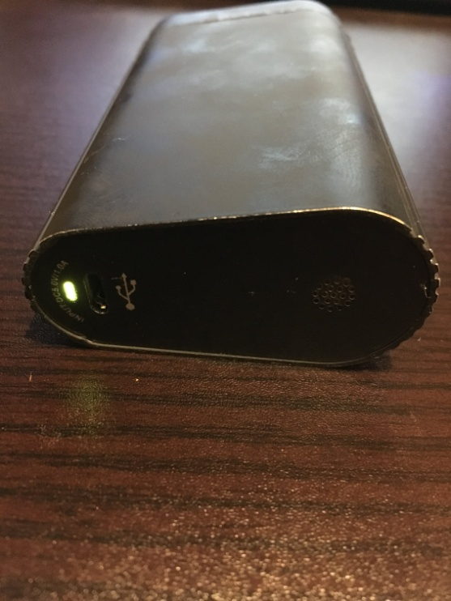

| アイコスから乗り換えたら年11万9233円も貯金できた話 | |
| 盛田真 | |
| kk Brandia (2018) | |
目次
アイコスから乗り換えただけで年１１万９，２３３円もの貯金ができた
何をきっかけにアイコスから乗り換えたのか
私は盛田真、４２歳。ごく普通のありふれたサラリーマンであり、２人の子供の父でもあります。私自身の個人的な話をさせてください。
私がアイコスを手に入れたのは２０１６年９月でした。当時はまだ品薄で、アイコスを手に入れた時はそれはもう嬉しくて嬉しくて、周りによく自慢していたものです。しかし、この優越感は長くは続きませんでした。
ネットでも話題になるほどの故障率・・・そう、私のアイコスも故障が何度も続いたのです。その数なんと２７台。アイコス本体（ホルダー）の赤ランプで吸いたい時に吸えず、アイコスカスタマーセンターへの電話は慣れっこになっていました。
１台を２週間以上まともに使い続けられたことが無かったのです。故障が続いたので２台目、３台目のアイコス本体を買い、常に２台を持ち歩いて片方が壊れたらもう片方でなんとかしのぐ、そして交換品が届くまでは故障品を自宅に置き、また２台を持ち歩く。そんな日が続きました。
私がアイコスから離れる決意をした、トドメを刺した出来事は２０１７年７月に起きました。最も恐れていた、２台同時故障です。しかも会社に着いてすぐの話です。私と同じように、会社についたらとりあえず一服する、という方は多いのではないでしょうか。
この、仕事前の一服が出来なかったわけです。あの憎たらしい赤ランプで！しかも２台同時に！
いったいどこにこの怒りを向けたらよいものか、ハラワタの煮えくりかえる思いを懸命に押し殺しつつ仕方なくコンビニへ紙巻きタバコとライターを買いに行き、仕事の昼休みを利用してアイコスカスタマーセンターへ電話をし、通算２７台目の交換を最後に私はアイコスに代わる代替品を探し始めました。
プルームテック、グロー、リキッド（液体）タイプのヴェポライザー・・・しかし、どれを試してもしっくりこないばかりか、なんと言うか、スカスカで吸った気がまるでしないものばかり。気づけば多くの時間と１０万円以上を費やして様々な製品を試しては「これじゃない・・・」を繰り返していました。
ならば、アイコスならしっかり吸った気がするかと言えば、控え目に言っても火を使う紙巻きタバコのそれとは雲泥の差と言えるほどに「軽い」ものなのですが、それでもアイコスはまだ幾分マシといえる代物であったと記憶しています。
私は育児と仕事以外でこだわりをほとんど持たない人間ですが、タバコだけは味にうるさい方だと自負しています。特に喉へのガツンとくるキック感だけは妥協したくなかったのです。
代替品探しの３つの必須条件を満たしたもの
そこで私は次の３点を代替品探しの必須条件としました。
１. アイコスから乗り換えるなら味は絶対に妥協しない
２. 故障が少なく丈夫であること
３. 欲を言えば、アイコスよりも安い（またはランニングコストが安い）
そして遂に、これら３つの条件を満たす（特に味について満足できる）ものを見つけました。
Ｗｅｅｃｋｅ Fenixというヴェポライザーです。ミニの方ではありません。
誤解のないようにさし添えて言えば、これは宣伝ではありません。私はこの製品のメーカーのまわし者でも無ければ、アンチアイコス派の人間でも無く、この製品がたくさん売れたからといって得することなど私には何ひとつありません。むしろ、Ｗｅｅｃｋｅ Fenixが品薄になってしまったなら、私がもう１台買いたい時に買えない状況すら考えられます。そして、私はあなたと同じ普通の愛煙家のひとりです。
強いて言えば、同じ製品を使う仲間が増えることは私にとって心強く、また、どこかで全く同じ製品を使っているあなたに出会えたなら、これはちょっと嬉しいことではあります。もしかしたら、どこかのゲレンデの喫煙所などで私に会うことがあるかも知れませんし。
とにかく、今や喫煙者というだけで肩身の狭い思いをする時代。あなたという愛煙家は私にとって数少ない仲間なのです。
だからこそ、あなたに私と同じ失敗や試行錯誤をして損をするようなことが無いように、私が行きついたこの間違いのない製品を勧めるわけです。もちろん、他の製品をあなたが試すことを止めはしません。私と同じように、多くの時間と１０万円以上を費やして、色んな製品を試すのもあなたの自由ですし、その過程が楽しめるならその楽しみを奪う権利は私にはありません。
でも、きっとあなたも私と同じように、最後にこの製品で落ち着くことでしょう。
ちなみに、私が会社で周りに同じ製品を勧めたところ、数少ないタバコ仲間の５人中３人がいま私と同じ製品を使っています。
乗り換えたこの製品（方法）の特徴
結果論ではありますが、アイコスからこの製品に乗り換えたことで私は年に１１万９，２３３円も貯金することができました。
数少ない愛煙家の生き残り、そして仲間であるあなたには、これ以上損をして欲しくない。アイコスが１箱４６０円の時代から、いよいよ５００円の時代へ。これから私はもっと貯金できるようになることでしょう。
火を使う紙巻きタバコからアイコスに乗り換えられたあなたなら、この方法と製品への乗り換えは私と同じようにとてもスムーズに出来るはずです。それでも変化と失敗を恐れることはきっとあると思うので、そんなあなたの為に私のタバコ仲間と一緒に考えた、あなたを後押しするこの製品（方法）の特徴をまとめてみました。
すぐにタバコ代が激減します
まず、この製品に乗り換えると、その翌日からタバコ代が激減します。毎日水筒を持参して飲み物代を節約するよりも早く、大きな効果がでます。１週間以内に２，０００円以上のタバコ代が浮きます。多分これは、国内最速で無理のないタバコ代節約術だと思います。これよりも早く効果が現れるタバコ代節約術を禁煙と本数を減らす節煙以外であなたが見つけたら教えてください。私と私のタバコ仲間全員が、それをあなたからお金を払って購入します。
我慢ゼロ
秘密を教えましょう。節約のための乗り換えや節煙、禁煙には我慢がつき物ですし、我慢を経験しなければ、タバコ代は節約できませんでした。これまでのタバコ代の節約術では我慢を避けることができなかったのです。そして結局は我慢に意志が負けてしまいます。でもこの方法なら我慢を味わう事がありません。それは本当です。実はこの製品には、我慢を感じずに充分な満足感が得られるユニークな特徴があります。これは私にとってまさに天国です。
ひと月３，０００円で吸い放題
Ｗｅｅｃｋｅ Fenixでは、１週間の始めに１回タバコを買って、次に買うのは１週間後です。なので節約開始の翌日からタバコ代が劇的にダウンします。タバコを買ったあとの残りの６日間はタバコ代ゼロ。これまで１日１箱だった人なら、ひと月３，０００円でお釣りが出ます。この新しいタバコ代の消費サイクルは、通常の消費サイクルよりも４分の１にまで減っているはずです。
シンプルで簡単
この方法はとてもシンプルです。毎日２箱以上吸う人でも簡単に実行できます。吸った回数を数える必要はありません。もうタバコの本数を気にしなくても大丈夫。ただ、どれだけ財布にお金が余ったのかを確認するだけです。
あのニオイから解放される
これは単なるタバコ代節約術ではありません。あのアイコス特有の鼻をつくニオイが無くなり、フィルターと一体化した紙巻きタバコの吸い殻の代わりにカラカラになったわずかなタバコ葉の小さな塊が出るだけなので吸いがらがにおいません。そしてあの面倒なメンテナンスもこの製品ならとても簡単。この方法ならばすぐにタバコ代が激減しますし、そして何よりこの製品は丈夫です。
節煙も不要
Ｗｅｅｃｋｅ Fenixでは苦しい節煙や禁煙は不要です。好きなだけ吸ってください。それでも開始の翌日から、ちょっといい値段のする昼食だって食べることが出来ます。我慢しなくても、あっという間にお金が余るようになります。
自動的にタバコ代が減る
Ｗｅｅｃｋｅ Fenixに乗り換えると自動的にタバコ代が激減し始めます。常にタバコ代を気にする必要はありません 。もはやこれまでと同じタバコ代を使うことの方が難しくなります。節約している事を忘れるくらいです。
連続で吸える
Ｗｅｅｃｋｅ Fenixは連続で吸うことを推奨していませんが、１本１本充電が必要なあの製品では出来ない連続吸いができます。多めのタバコ葉を入れて長く楽しむことだって自在です。
ここまで読んでお分かりのように、本当にとても良い物を見つけました。
私がアイコスから乗り換えたこの製品は、結果的に今まで私が聞いたり試してみたタバコ代節約術の中で一番でした。
すぐにタバコ代が激減しますし、我慢する必要もありません。タバコの本数や頻度を気にすることもありません。どれだけ吸っても自由です。味もしっかりしていて、喉へのキック感も充分あります。喉へのキックの強さの調整はタバコ葉の量と４つの温度設定でかんたんに出来ます。
そして、この方法で使うタバコ葉は、たぶんあなたが知らない１８０以上の種類が用意されているので、あなた好みの風味や香りがきっと見つかることでしょう。
アイコスから乗り換えただけで年１１万９，２３３円もの貯金ができた
では、私の貯金がどのように増えたのか、かんたんに紹介します。
まず、これまで吸っていたアイコスのヒートスティックは１箱２０本入りで４６０円でした。
つまり、アイコスの単価は１本２３円（４６０円÷２０本＝２３円）。
多少の増減はあるにしても、ほぼ１日１箱の２０本を吸っていたので単純に１年間３６５日で
７，３００本、これに１本あたりの単価２３円を掛けると年間で１６万７，９００円（年７，３００本×２３円）という年間のタバコ代が算出できます。
一方、Ｗｅｅｃｋｅ Fenixではどうかというと、私の場合、いま吸ってるＣＯＬＴＳのアップルシナモンが１パッケージ４０ｇで８８０円。１回で使うタバコ葉の量はおよそ０．３グラム（実際はこれよりもうちょっと少ないと思います）。つまり１３３．３３３・・・回分が８８０円で買えるわけです。
１回あたり約６．６６・・・円で、私の場合年間では４万８，６６７円（年７，３００本×６．６６６・・・円 で、実際は４万８，６６７．６６６６・・・円）のタバコ代になりました。
アイコスだった時［１６万７，９００円］ － Ｗｅｅｃｋｅ Fenixに乗り換えた後［４万８，６６７円］
＝差額 １１万９，２３３円
これが年間１１万９，２３３円の貯金になった根拠です。
ちなみに私が買ったときのアイコス本体と充電器セットのキット価格が１万１，０００円くらいだったのに対し、Ｗｅｅｃｋｅ Fenixは９，８００円でした。
なぜこの製品（方法）が良いのか
そういうわけで、Ｗｅｅｃｋｅ Fenixという加熱式タバコに『銘柄を変える』だけであなたは毎月１万円以上の自由なお金が手に入れられます。実際、私はこの方法に乗り換えただけで年１１万９，２３３円もの貯金に成功しました。しかもこれは少なく見積もっての数字です。実際は１２万円以上もの節約に年間で成功しています。
１日に１箱以上吸われる方なら、この節約効果はもっと凄いことになるのです。
でも、本題に入る前にちょっとだけ解説させてください。解説する理由は、あなたが間違った品物を買って損をしないようにするためです。私のように、多くの時間と１０万円以上をかけて様々な製品を試していく必要と苦労は、避けられるのであればそれに越したことは無いと思うのです。
加熱式は大きく分けて２種類あります。
ひとつはタバコ葉を直接熱するコンダクションタイプと呼ばれるもの。アイコスはこのタイプです。
もうひとつは熱した空気をタバコ葉に通す熱対流式のコンベクションタイプです。私があなたにお勧めするWeecke Fenixというヴェポライザーがこのタイプです。
この熱対流式のコンベクションタイプは高級品に分類されるものでして、喫味の良さはもとより、メンテナンス性に優れ、とても丈夫です。
アイコスやグローは直接熱するタイプで、焦げ付いた加熱プレード等の加熱部分の掃除はなかなか大変でした。また、焦げが生じることで喫味も大きく変わるうえ、加熱ブレードに至っては掃除の仕方ひとつで破損するため、とても気を遣う掃除が強いられていました。
一方、熱対流式は高温の空気でムラなく葉から成分をミスト化します。喫味が安定しているうえ、とてもまろやかで煙（ミスト）がしっかり出るので充足感が違います。
構造がシンプルなので掃除がとても楽です。葉が直接焦げ付くことはほとんどありません。
かく言う私も使う前は熱対流式だと高温の空気がそのまま口に流れ込んできて熱すぎるのでは？と思っていました。しかし、使ってみると驚くほど普通のタバコに近い温度でスーッとスムーズに口へ運ばれてきます。
吸い口のドリップチップで冷却された適温のミストが実に心地よく、鼻を抜ける香りは長く居座ることのないスッキリとした後味です。ネバ付かずクリアな味わいですが、決して軽すぎることは無く、むしろ長らく軽いタバコに慣れた方だとクラっと来るほど喉へのキックもしっかりあります。
タバコ葉の量を自身で加減できるところも優れた特徴のひとつです。灰は出ません。
そして何より、このヴェポライザー最大のメリットは、タバコ代を大きく減らすことができる点にあります。私の場合、タバコ代は４分の１に減りましたが、本当に全く我慢をしないでこの圧倒的なコストパフォーマンスです。
信じられないかも知れませんが、事実、吸いたいだけ吸って、それでも４分の１なのです。恐らく、どれだけ吸いまくったとしても３分の１にまで減ります。むしろ、これまでと同額をタバコに使い続けることは不可能と思えるほどに驚くほどコストパフォーマンスが良いのです。
Weecke Fenixでは「シャグ」と呼ばれる刻みタバコ葉を使います。シャグは本来、手巻きタバコ用のもので、種類がとても豊富です。
３０〜４０グラムの刻みタバコ葉が１パッケージ６００円～９００円前後で売られていて、手巻き用の巻紙が５０枚前後付属しています。紙巻タバコ２０本入りのタバコ一箱あたりに置き換えると、手巻きをした場合では一箱２８０円のタバコに相当します。しかし、手巻はとても手間がかかります。
手巻きでもコストパフォーマンスは魅力ですが、アイコスやグローの紙巻タバコに含まれるタバコ葉の少なさを知ったらあなたはきっと驚くことでしょう。その量たるや、小指の先程度しかタバコ葉は入っていないのです。
つまり、加熱式タバコは、手巻きの半分以下のタバコ葉で充分な満足感が得られるのです。
そしてWeecke Fenixでも同様に、本当に指先程度のひとツマミで充分楽しめます。
前述しましたがWeecke Fenixで使うタバコ葉の量は、１回５分の喫煙でおよそ０．３グラム。私がいま愛用しているＣＯＬＴＳのアップルシナモンのシャグは４０グラムで８８０円です（もっと安いシャグもあります）。つまり１３３回＝紙巻きタバコ６．６５箱分が８８０円で済むのです。１箱５００円のタバコなら６．６５箱で３，３２５円。これがおよそ４分の１程度の８８０円で済むわけです。
さらに、火を使う紙巻きタバコの場合だと１本で大事に吸ってもせいぜい４分。そう、つまり・・・
手巻き用のシャグを、加熱式で使う。
この方法こそがコストパフォーマンスの面で最高の組み合わせなのです。この組み合わせで、これまで毎日一箱吸っていた私の場合では８８０円の４０ｇのシャグ１パッケージで１週間以上持ちます。
これには本当に驚きました。１週間以上のタバコ代がわずか８８０円で済んでしまうのですから。
さて、ここまでヴェポライザーについて簡単に解説して参りましたが、ヴェポライザー本体はとても沢山の製品が出されています。数千円から２万円以上するものまで実に多種多様です。だからこそ、 失敗のない本体選びはとても重要 なのです。これから用意するものをお教えいたします。
用意するもの
1.WEECKE Fenix Convection Vaporizer （９８００円ほど）※必須
加熱式タバコの機器本体（以下、本体と記します）です。ミニではない方を用意してください。
Amazon やネットショップで簡単に入手できます。色々試しましたが、丈夫さとメンテナンスの楽さ、喫味の良さがピカイチで、どの製品より頭一つ抜きん出ています。私はもうこれを手放せません。
切り替えできる４段階の温度設定のうち、私は下から２番目の比較的低温（青ランプ）で使っています。これより上だと喉へのキックが強すぎて私はムセます。また、本体内蔵バッテリーの持ちからこの温度に落ち着きました。
2.シャグ（７００円前後）※必須
刻みタバコ葉です。ひとつ３０〜４０グラム入っていて、毎日一箱吸っていた私の場合でも余裕で１週間もちます。加熱式に属する本体には、フレーバー系（着香系）シャグの相性がとても良いです。
気になる匂いですが、私が愛用しているフレーバー系では、周囲が言うにはまるで紅茶のような香りだそうです。タバコ臭さはまったく感じられず、また、あの製品のような独特のイモが焦げたような匂いはしないとのことです。
シャグはコンビニでは売っていません。近くのタバコ屋さんでも売っていない場合、ネットでも購入できますので『シャグ 販売』でネットショップを検索してみてください。どれにしようか迷うほどたくさん銘柄が出てきます。
もし近くのタバコ屋さんでシャグの取り扱いがあったら、そこの店員さんはタバコに詳しい可能性が高いです。
好みの味、普段吸っている銘柄を伝えて相談すると、きっとあなたにオススメのシャグを紹介してくれます。シャグは試供品がある場合もあるので、色々試したいと伝えてみて下さい。お店に試供品があれば、何種類か付けてもらえる場合があります。
どれから試したら良いか分からない場合は、フレーバー系のCHOICE（チョイス）ダブルアップルから試してみて下さい。程よい甘みにしっかりしたタバコ感もあってオススメです。メンソール系は軽めのものを選ばないと、きっとムセます。

既にモバイルバッテリーをお持ちであれば追加購入は不要です。
ただ、注意点として１Ａ（アンペア）出力のＵＳＢ端子が付いていることをご確認ください。急速充電対応の１Ａを超える出力で充電するとWeecke Fenix本体が故障すると説明書にありますので要注意です。
本体は満充電からおよそ７回前後、各回５分間喫煙が楽しめますが、外に持ち出した場合、本体内蔵バッテリーだけでは１日持ちません。そんな時にモバイルバッテリーが役立ちます。もちろんモバイルバッテリーではなくWeecke Fenixを２台持ちしてもいいです。
4.密封容器（１００円前後）
本体には金属製の耳かきのようなものが付属していますが、吸ったあとのシャグを取り出すのに毎回この耳かきを使うのはとても面倒です。
そこで密封容器が役立ちます。重宝するのは密封容器自体ではなくて、密封容器のフタの方です。
フタを逆さまにして、本体を密封ゴム部分（写真のものだと白い部分）に軽く何度か当ててやると簡単にコロンとシャグを取り出すことができます。
同じことは金属製や陶器、ガラスの容器でもできますが、打ち付けると打撃音が結構うるさいのと、ガラスやプラスチックでは本体が頑丈すぎて割れてしまうのです。
ゴム製の灰皿でもあればいいのですが、特性上熱に弱いゴムで出来た灰皿はやはり無いのか、私は見つけられませんでした。
色々試した結果、百均で買った密封容器のフタの使い勝手が良いことがわかりました。フタが完全に容器から外せるタイプを入手してください。
なお、密封容器は開封したシャグの乾燥を防ぐのにも重宝します。
5.ベビー綿棒（200円前後）
先の細い綿棒です。普通の綿棒は太すぎて入らないドロップチップ（吸い口の部分）が掃除できます。ドラッグストアや薬局で入手できます。
6.無水エタノール（５００円前後）
ベビー綿棒での掃除に使います。減りがごく少量なので小さな容量（１００ｍｌなど）のものでも構いません。ドラッグストアや薬局で入手できます。
使い方
1.付属品を確認する
本体（WEECKE Fenix Convection）を入手しましたら、まずは付属品を確認して下さい。
2.本体を充電する
付属品の確認が終わったら、次は充電です。
充電用のＵＳＢケーブルは付属しますが、充電器そのものは付属していないので、１Ａ以下の出力を持つ充電器を用いて充電を実施します。１Ａを超える出力のＵＳＢポートで充電すると故障すると説明書にあるので注意が必要です。私は以前使っていたｉＰｈｏｎｅ４Ｓの充電器を使っています。
パソコンのＵＳＢポートから充電してもいいです。満充電で底面にあるＬＥＤが自動消灯または緑で点灯になります。充電中は赤のゆっくり点滅です。
3.シャグを本体に入れる
満充電になったら、いよいよ初体験です。
ドリップチップ部に付属のシールドとパッキンを取り付け、本体チャンバー部にシャグをほんのひとつまみ入れます。はじめはこのパッキンが少々匂います。
そしてこのあと、シャグの入れすぎにご注意です。これでもちょっと多めなほどです。
はじめは私も適量が分からず、結構シャグを詰め込んでいましたが、シャグは本当に少量で大丈夫です。入れすぎると、吸い終わった後のシャグの取り出しが面倒になるほか、空気の通りが悪くなるので喫味にも影響します。
なによりシャグがもったいない事になるので、このくらいかな、と思う量の半分でまずは試してみてください。指で押し固めず、ふんわりと空気が通りやすい状態でチャンバーに入れるのが美味しく吸うコツです。ついつい多く入れすぎてしまいがちですが、思いのほか少量で吸いごたえがあります。
付属の金属製オイル・ワックス用カップは私は使っていませんが、もしお使いになるなら取り出し時にとても熱い状態になっているのでヤケドに注意です。また、金属製オイル・ワックス用カップにシャグを詰めるとシャグの取り出しが結構大変です。
4.フタを閉める
シャグを直接チャンバーに入れたらドリップチップ付きのフタを閉めます。フタのチャンバー側（ドリップチップが付いている方）に本体の内側と合う突起がありますので、この突起を本体にはめ込む形でやや斜めに装着します。
真上から垂直にフタを置くと隙間が出来るので、斜めにフタを本体に当てがってからフタを下ろすイメージです。
5.加熱する
電源ボタンを２秒間に５回連続で押して加熱開始です。
フタは強力な磁石で本体とくっついていますので、逆さまににしてもフタが外れる心配はありません。加熱を途中でやめたい時はもう一度電源ボタンを５回連続で押せば電源を切ることができます。
設定温度までの加熱中はフタのランプが設定温度の色で点滅し、設定温度になると点灯になります。
加熱中や喫煙中にボタンを連続２回押すと加熱温度が切り替わります。温度設定は全部で４つあり、低温から緑、青、紫、赤の順に切り替わります。私は青で使っています。
5.吸う
ドリップチップを回転させて起こし、吸い口から吸引します。慣れないうちはムセたりしますので、初めはゆっくり浅く、次第にしっかり吸い込むようにして行くと慣れるのが早いと思います。
真冬など外気が低いとまれに設定温度を下回ってフタのランプが点滅して加熱が始まりますが、気にせず吸い続けて大丈夫です。吸う回数は本体でカウントしていないようで、５分経つと自動で電源が切れます。
各色交互にランプが点滅したら電池切れの合図です。

また、本体底面のランプは電源が入っている時だけ電池残量に応じて点灯します。電池残量の多い順に緑、黄色、オレンジ、赤へと変化しますので喫煙中はまめに底面をみて電池残量の確認をオススメします。
6.吸い終えたら
自動で電源が切れても連続で電源を入れれば吸い続けることが出来ます。ただ、説明書によると本体がしっかり冷却されるまで待ってから再加熱しないと故障の恐れがあるとの事なのでご注意。（私はあまり気にせず気分次第で連続で吸ったりしてはいますが）
吸い終えたらフタを開けてカラカラに乾いたシャグを取り出します。
付属の金属製耳かきを使っても良いですが、シャグが適量なら本体を軽く振るだけでコロンとシャグが出てきます。
この時、別途用意した密閉容器があれば、フタを逆さまにして皿のように使って、フタに付いている柔らかい密閉パッキン部に本体を軽く当てる格好にするとシャグは簡単に出て受け皿となるフタに落ちてくるので周りを汚さず便利です。
7.次回に備えて
シャグを取り除いたらドリップチップを回転させて元の位置に戻し、フタを閉めて終わりです。
電池残量が少ない時は充電しておきましょう。
シャグの持ち歩き方
私はシャグをパッケージのままポケットに入れて持ち歩いています。
シャグ専用のソフトカバーやバッグなどが販売されているようですが、多くの場合手巻きタバコを外出先で作るにあたって巻紙などを一緒に持ち歩くためのものなので、この手の品は少々かさばるのです。
シャグのパッケージには再利用可能なテープが付いていて、シャグがこぼれ出さないように丸めておくことができます。
ただ、このテープはすぐに粘着を失うので、輪ゴムで留めてもいいかも知れません。私はポケットの収まりが割と良いので、ただパッケージごと丸めて持ち歩いています。
私の場合、外出先へ持ち出すものはパッケージごとのシャグと本体、そしてモバイルバッテリー、付属の充電ケーブルのみです。
リキッドの使い方
買って来た（または届いた）シャグは、そのまま吸っても充分楽しめますが、リキッドを追加することでミストが増え、吸いごたえも充足感も増し、なにより楽しみ方の幅がとても大きく広がります。
ただ、私はリキッドを使うのをやめました。理由は吸い終えたシャグの取り出しがしにくくなることが多いからです。軽く振るだけでシャグが出てくる、いわゆる「シャグポン」が出来なくなることが多いのです。
シャグをセットするチャンバー部やパッキン、ドリップチップ内の汚れも多くなります。それでもマメにメンテナンスすることが面倒でなければ、リキッドの使用そのものは大して手間はかかりません。
シャグを開封したら、そこにリキッドを10滴くらい垂らしておくだけで良いです。
リキッドの浸透ムラが気になる方はシャグのパッケージ内で、本体に付属する金属製耳かきを使ってよく混ぜながら垂らしてもいいです。
私はリキッドを使っていたとき、リキッドをシャグにパッケージ内へ垂らしたらそのままパッケージごとシャグを丸める形で保管していました。
前述しました通り、リキッドは多様な香りが用意されています。
例えばフレーバー系シャグでチョコレートの香りにオレンジフレーバーのリキッドを追加したり、レモンにバニラ、チェリーにメンソールといった、好きなフレーバーにカスタマイズできます。
ミストを増やすだけのプレーンなリキッドもあります。
メンテナンス方法
本体
本体の掃除は私はあまり高頻度ではしていません。ひと月に一回掃除すれば充分だと思います。
本体、特にチャンバー内は水にとても弱いので、無水エタノールを軽く染み込ませた綿棒でチャンバー部をやさしく撫でてください。
コゲが取れないからといってゴリゴリ削ったり、強くこする必要は無いです。焦げて残ったシャグは軽く綿棒を当てるだけで取れます。
チャンバー周りがよく汚れるので、私は何日かに一度ティッシュで拭いています。
ドリップチップとフタ
ドリップチップとフタは最もよごれる部位です。リキッドを使っていると特にチャンバー真上に来る網目のシールドがヨゴレます。
シャグもここによく付くので、パッキンとシールドを外してよくぬるま湯で洗ってください。
パッキンとシールドは小さいので洗っている最中に手から落として排水口に落ちると回収が大変です。洗面器や浅めの容器に入れて洗うと落とす心配がなく安心です。
もし、無くしてしまったり破損してもご安心を。別売りの パーツセット が入手できます。 ドリップチップ も同様に別売りがあるので大丈夫です。
シールドの目はとても細かいので、詰まるとなかなかカスを押し出すことができません。付属のブラシを使って詰まりを押し出しながら洗うと根詰まりが解消できますが、面倒であれば画鋲の先でシールドの穴をつついてやると根詰まりはキレイに取れます。
唯一の欠点
私がＷｅｅｃｋｅ Ｆｅｎｉｘに乗り換えてから早１年。唯一の欠点と言えるものが見えてきました。それは、バッテリーの持ちです。
アイコスもバッテリーが内蔵されていますので、これはＷｅｅｃｋｅ Ｆｅｎｉｘに限った話では無いのですが、毎日使うものなのでやはりというかバッテリーはヘタって（劣化して）きます。
感覚値ですが、Ｗｅｅｃｋｅ Ｆｅｎｉｘの場合、半年ほどでバッテリーの減りが早くなってくる感じで、新品のときは青ランプの温度設定で満充電からだいたい７～８回程度吸えていたのが、ゆっくりではありますが徐々にバッテリーのヘタりとともに吸える回数が減っていきます。
１年間使い続けた私の場合で半分程度のバッテリーの持ちにまで劣化してしまいました。本体は１台９，８００円と、正直決して安くはない買いものなので、さてどうしたものかと、電池交換できるタイプにでも乗り換えようかと代替品も試してみたのですが、同じシャグを使っているのにやはりというかしっくり来ない喫味・・・
それならば、本体の保証は無くなってしまうけれども、いっそ自分で電池を交換してみようと思って必死に交換用の電池を探しはじめました。
これには何度もくじけそうになりましたが、私が勧めてＷｅｅｃｋｅ Ｆｅｎｉｘに乗り換えたタバコ仲間たちも同じ問題で悩んでいたので、海外サイトで情報収集したり、様々な電池を試してみて、ついに使える電池を発見しました。（結局この電池の発見までに１万円以上を使ってしまったのですがね・・・）
交換に使えた電池と交換方法（実行は自己責任でお願いします）
【日本製セル KEEPPOWER IMR 18650 3120mAh リチウムマンガンバッテリー】 (SONY VTC6 セ ル ) 30A 電子タバコ用 （１，２８０円）
１０数本もの様々な電池を試してしっかり使えることがわかった電池はこれでした。ただ、ここから先はメーカーの保証対象外であって、そもそも電池交換を想定していない作りでもあるので実施はくれぐれも自己責任でお願いします。電池交換によって起きた一切の事故や怪我などの事由に、私は一切の責任を持てません。ただ、私の場合、この電池に交換して新品の時と同じ電池の持ちを復活できています、ということだけ紹介させてください。
この電池はＡｍａｚｏｎで簡単に手に入ります。電池が届いたら、慎重にＷｅｅｃｋｅ Ｆｅｎｉｘを分解して電池を交換し、また元にもどします。所要時間は慣れれば１０分もかかりません。
＜電池交換の３つの手順＞
１. Ｗｅｅｃｋｅ Ｆｅｎｉｘ本体を分解する
まず、本体底面の充電に使う穴の部分の隙間からマイナスドライバー等を使って底面カバーをはずします。付属の金属製耳かきのようなものでも大丈夫です。
すると、下の写真のようにネジが３か所出てきますので、これをプラスドライバーを使って外してください。ネジは小さいので無くさないように。
ネジを３本外したら、先ほどと同じように、今度は同じく底面のプラスチックカバーを外します。底面は最初に外した薄いカバーと、下の写真のプラスチックカバーの２重の構造になっています。これを外しておかないと、次の手順でうまく本体の中身を押し出すことができません。
うまく外すことができると、下の写真のように底面が露出します。ここまできたら本体の上蓋（ドリップチップが付いてる蓋）を外しておき、本体側面の電源スイッチを強めに押しながら、この露出した底面を奥に押し上げる格好でずらしていきます。
グググっとずらしていくと、このように中身だけ上にせり上がってきますので、あと一息です。
ここまでせり上げることができたら、下の写真の中央に見える隙間にマイナスドライバーや金属製耳かきを差し入れて、テコの原理で更に上へとせり上げていきましょう。
せり上げ切って本体の中身が出ると、このような状態になっているはずです。本体横の電源スイッチのボタンが飛び出すので、無くさないように先ほどの３本のネジと一緒にどこかへ保管しておいてください。
２. 電池を交換する
ここまで来たら、つぎは電池交換です。
慎重に電池と左側の基盤を外して、電池の両極についている赤と黒のケーブルを電池から取り外します。両極へのケーブル接続は半田づけがされていますが、よく見ると電池に直接半田付けされているのではなくて、薄い金属板に半田付けされているので、この金属板を適度な大きさで半田付け部分を避けるようにカットします。
このように電池だけを外したら、交換用電池にこの電池部分を入れ替えるだけです。ただ、プラス側とマイナス側だけは絶対に間違えないでください。
プラス側が赤いケーブル、マイナス側が黒いケーブルです。
ケーブル先端には半田付けされた金属板が付いたままになっているハズですので、両極にきっちり接触するよう耐熱テープなどで固定します。私はホームセンターで買ってきた細めの養生テープを使いました。
シャグポンをするときに本体を振ることになるので、振動や勢いで両極の端子接続が簡単にズレてしまわないよう、結構がっちり、最後はテープで２、３周ぐるぐる巻きにして固定しました。
ここまで終えたら念のため充電ができるか少し試してみましょう。充電できなかったらプラスとマイナスを間違えているか、正しく両極にケーブルが通電できていないかのどちらかですのでテープを巻きなおします。
３. Ｗｅｅｃｋｅ Ｆｅｎｉｘ本体を組み立てる
交換した電池と基盤を元の位置に戻して固定し、分解の手順と逆の手順で本体を組み立てます。本体の中身は上から差し入れる時に電源スイッチを強めにおさえ付けながら差し込まないと電源スイッチごと中に入らないのでちょっとコツが要ります。
本体を中に入れきったら底面のプラスチックカバーをはめ込んで、３本のネジを止めて最後に薄いカバーを張り付けて交換完了です。
あとがき
ここまで私の実際の使い方を交えてあなたにこの方法の全てをお教えいたしました。アイコスで加熱式に慣れた私でも唯一はじめに違和感を感じたのは青いシリコン製パッキンの匂いです。２日もすればこの匂いはほぼ気にならなくなるのですが、異臭と言えるほどパッキンが臭いのです。メーカーさん、このパッキンの匂い、ほんと何とかならないものですかね、と思うほど。
しかしここはぜひ乗り越えていただきたいです。
その先に待っているのは、毎月自由に使える１万円が増えた新しくすばらしい生活です。
あなたの年収が１２万円増えたことに等しいのです。１０年続ければ車が買えてしまうほど経済的なインパクトがあります。
この１万円で何をしようか、何を買おうか・・・
そんな楽しみがあなたに増えたなら、私は本書を書いた意義があったと大変嬉しく思います。
発行日
２０１８年３月２４日 第１版第１刷発行
２０１８年６月１４日 第１版第２刷発行
２０１８ 年8 月１７日 第１版第３刷発行
著者
盛田 真
発行所
株式会社ブランディア
〒１１５－００５２
東京都北区赤羽北１丁目１７番１６号